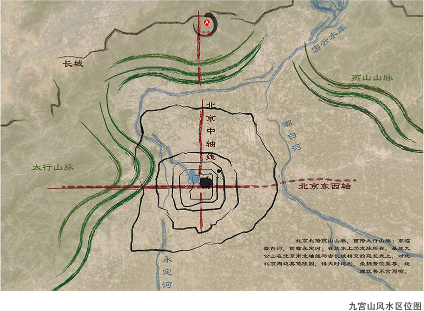

园区风水
九公山长城纪念林处于京皇城中轴线正北方向，明十三陵也坐落在这条中轴延长线上，谌舆学认为，与皇帝和皇族相关的地理走势叫龙脉，北京市九公山长城纪念林选址于此，有“龙脉相承”之意。不但充分体现中华传统殡葬文化的精华，同时满足现代人返璞归真、寄情山林，远离城市喧嚣、回归自然宁静的渴望为人们提供一处往生者的后花园。
九公山长城纪念林内，有绵延7.3公里的明长城，拥有4个烽火台，整体明长城蜿蜒曲折，风光秀丽，重峦叠翠。即有山水朝贡之灵动、横开帐幔之气势；又有林木相依、地蕴天泽之境界；是慎终追远，福泽后人的福田吉地。
以九公祭堂为中心点,北面最高的山峰是九公山区域的主脉,风水 学叫始祖山。始祖山前有过度性的小山坡，它的作用是启承天地灵气和人间香火。风水学称，主脉前有左右流水相挟的山坡，此为大吉之兆。九公祭堂坐落在得风、藏水、聚气的神山基座，供奉“地 狱不空，誓不成佛”的地藏菩萨，因此此山得名为“佛缘峰”。 九公祭堂前方河流转弯处有个小山坡，风水学称，穴前近而小的山，形如玉几横琴叫案山，为贵人据案抚琴吟颂之意，有诗云：“面前有案值千金，远喜齐眉近应心”。九公山的案山，形如云几横琴，地处过穴湾环，为风水学称颂的千金之地。
九公祭堂左侧山势绵长，如青龙盘卧；右侧山势蜿蜒，如白虎踞立。九公祭堂之前，远而高的山，风水学称为朝山，取宾主相对之意，成天然朝拱之形，主大福大贵之实。按风水要求的主穴之地，就是安排在朝山环绕的坡地上：既有龙脉相承，又有佛祖保佑，更有群山朝供、朝水相济，实为福泽后人，生生不息之福地
著名风水学家对九公山长城纪念林如此评价说：“背靠始祖山，溪水过环湾。卧塌神山座，龙虎守玄关。居前有案台，帐幔横朝山。京城龙脉地，福泽出天然。
殡葬文化
十一种常见的殡葬方式
一、土葬是最为古老、最普遍的方式之一。在我国，已知最早的土葬是旧石器时代的北京山顶洞人，新石器 时代的墓葬已有大量的发现。当时人们实行土葬主要是为了死者被...
2016-04-13
阅读全文
中国现代殡仪习俗
随着社会的进步，人们文化水平的提高，在城市里，土地资源等比较紧张，人们对于亲人的丧事办理也相对简化亲人去世后，用仆告形式告知亲朋，城市里有许多...
2016-04-13
阅读全文
中国传统殡仪习俗
殡期礼仪繁多，如要在棺屋前高搭灵棚，摆上灵位举行丧祭殡期礼仪有简有繁，但程序则很有规范。①属纩礼仪属放置，纩：新絮或丝绵。指用心絮或丝绵置于弥留者口鼻...
2016-04-13
阅读全文
中国殡葬祭祀文化的思想内涵
孝道观念是中国文化得重要组成部分，数千年来，中国人无论富贵贫贱，都深深受到礼教的影响。...
2016-04-13
阅读全文